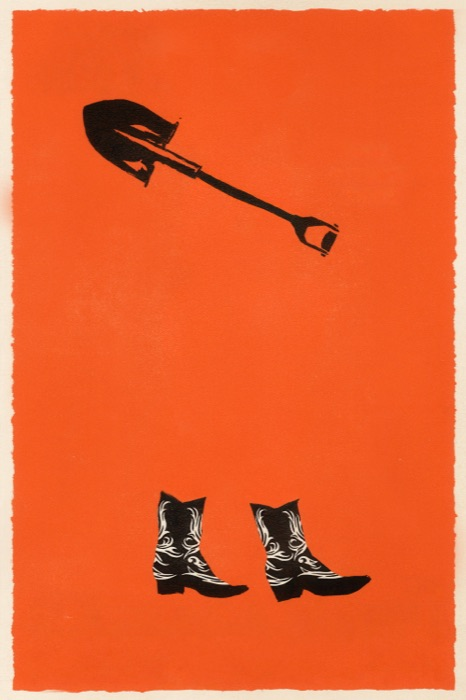

Le uscite di ottobre 2026
Otto film da non perdere al cinema questo mese, da Iñárritu a Refn
Ottobre porta in sala un bel mix di autori, thriller e blockbuster! Abbiamo scelto otto titoli da consigliarvi, in ordine di uscita. E voi, cosa attendete di più?
Her Private Hell
Il ritorno di Refn al cinema a dieci anni da The Neon Demon: fantascienza psicologica al neon in una metropoli avvolta dalla nebbia.

Digger
Iñárritu e Tom Cruise in una commedia imprevedibile: un magnate del petrolio chiamato a rimediare a una catastrofe che ha causato lui stesso.
Verity
Il best seller di Colleen Hoover diventa un thriller: una scrittrice scopre segreti inquietanti nell'autobiografia di un'autrice famosa.
The Social Reckoning
Aaron Sorkin torna a raccontare Facebook, questa volta attraverso i Facebook Files e la whistleblower Frances Haugen.
Primetime
Il lato oscuro della TV secondo A24: uno show sensazionalista che scivola sempre più verso l'immoralità.

Street Fighter
Il picchiaduro più famoso di sempre torna al cinema in versione live-action, con il torneo mondiale di arti marziali.
Klara and the Sun
Waititi adatta il romanzo di Kazuo Ishiguro: un'androide alimentata a energia solare e il legame con la ragazza che deve accudire.
Clayface
Il lato horror dell'universo DC: un attore sfigurato si sottopone a un trattamento sperimentale che lo trasforma in un mostro d'argilla.
Da segnare anche
Oltre a questi segnaliamo Je so' pazzo, il biopic su Pino Daniele (15 ottobre), Ice Cream Man di Eli Roth, candidato ufficiale alla trashata del mese, e il nuovo adattamento di Ragione e sentimento con Daisy Edgar-Jones (22 ottobre). Ovviamente arriveranno le nostre recensioni!